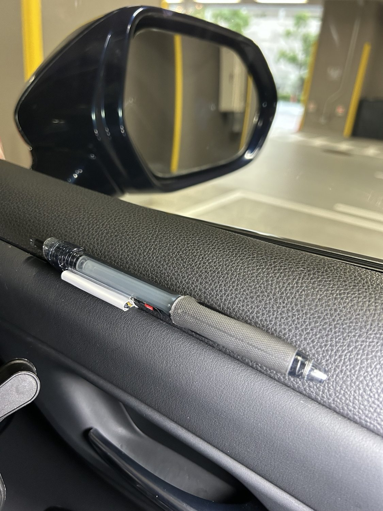
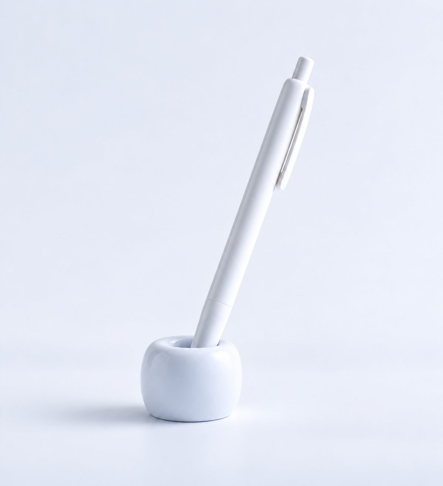
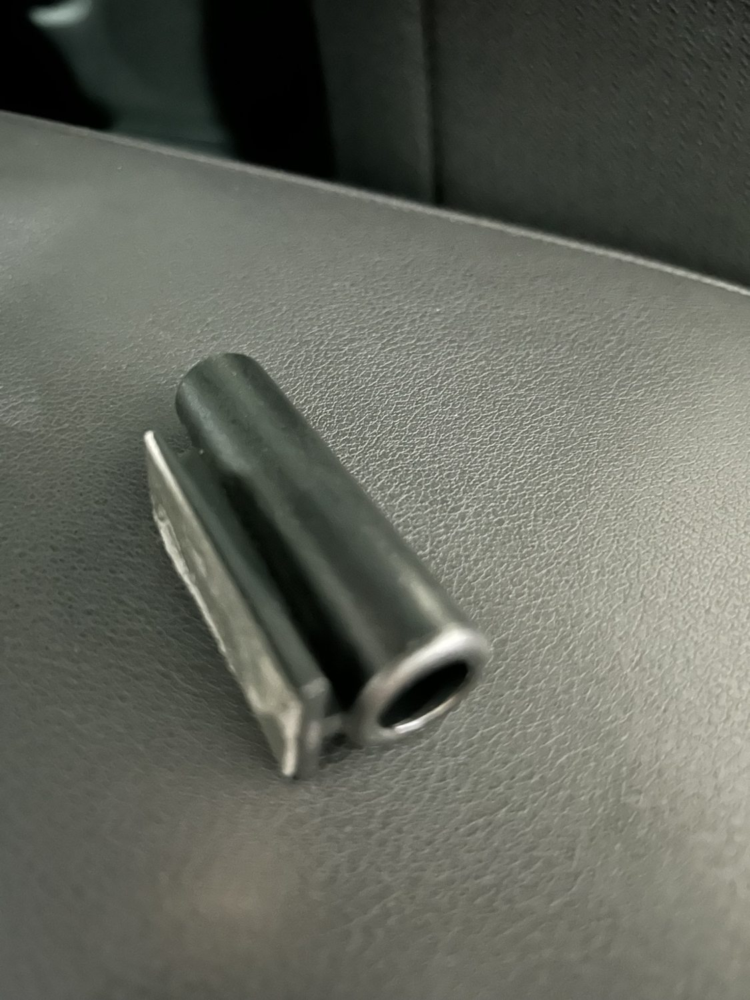
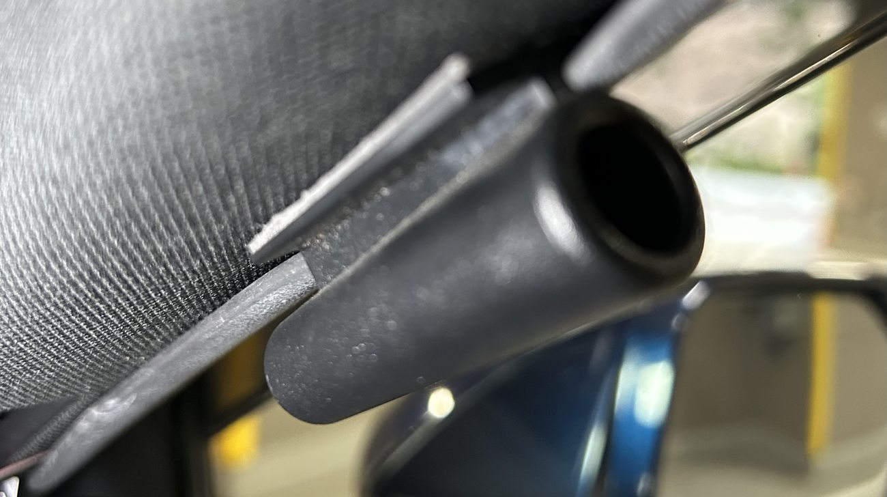
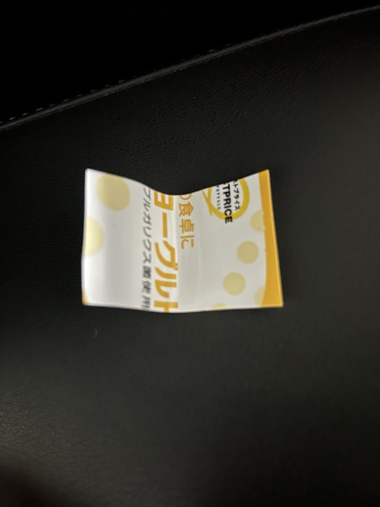
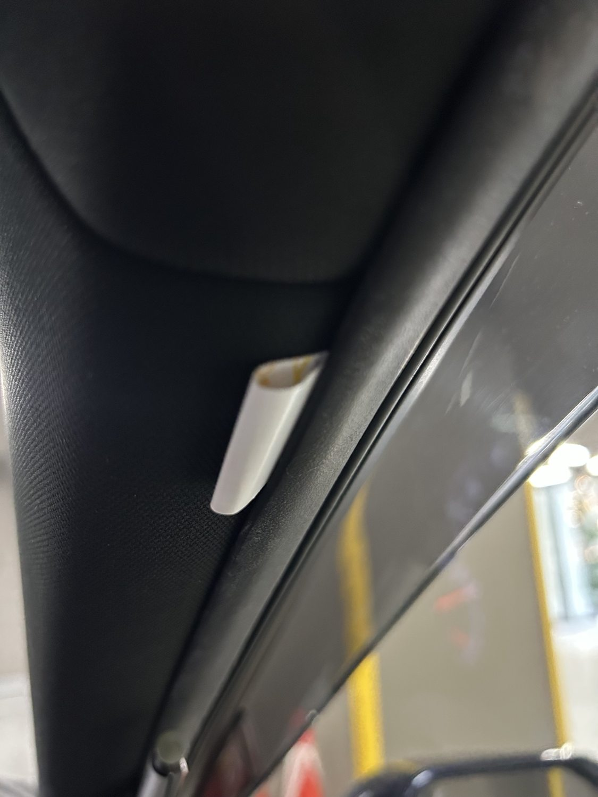
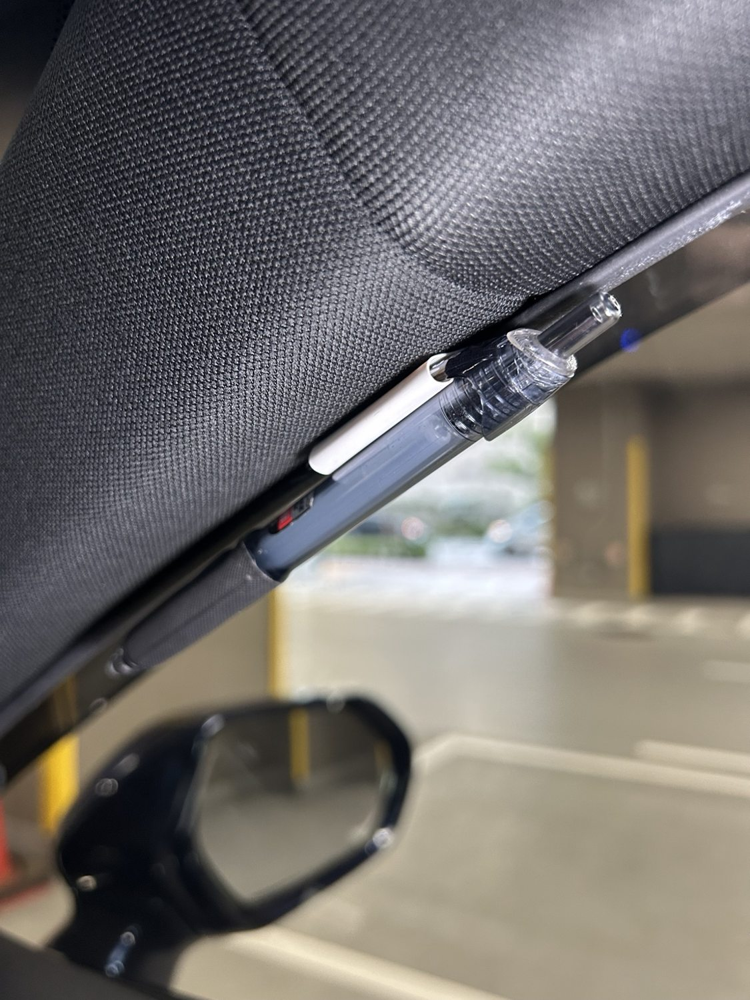

Kussoon ／ 💡 工夫・アイデア
車の運転席にボールペン差しを作ってみた
広告・PRを含みます
車を運転する仕事をしていると、ボールペンを使う機会が結構あります。でも、いざ使おうとすると「どこに置いたかな？」となることもあります。そこで、運転席のちょっとした隙間を利用して、ボールペンの置き場所を作ってみました。

どこに置くのがいいのか
外見にこだわらなければ、恐らくベストな方法は、自分の右耳の上に挟むことですね。右利きなら。
胸ポケットを普段使っている人なら、それもいいでしょう。
でも、私はできれば車内の決まった場所に置いて、必要なときにサッと取り出せるようにしたいのです。
自分の車なら、サンバイザーにつける小物入れにでも差せばいいのでしょうが、仕事で任されている車ですから、それもできません。
歯ブラシスタンドも試してみました
右側のエアコンの吹き出し口の上に少し平らな場所があったので、そこにテープで歯ブラシスタンドを固定して、歯ブラシの代わりにボールペンを立てることもしてみました。

ところが、ペンを支える部分が下の方しかないので、段差でペンが遊んだり、坂道でペンが落ちたりしました。結局、この方法はやめました。
まずは、市販のペンホルダー
次に使ったのは、Amazonで買った小さなペンホルダーです。黒い筒の横にクリップのような部分が付いていて、車内の部材の隙間に差し込めるようになっています。


大がかりな工作をしなくても、ボールペンの居場所を作れるのは便利です。
ヨーグルトのフタでも作れそうです
でも、ここでふと思いました。要するに、ペンを差し込める部分と、隙間に挟み込める部分があればいいわけです。
そこで使ってみたのが、400g入りのヨーグルトのプラスチック製のフタ。これを長方形に切って、折り曲げただけです。

特別な工具や材料を用意する必要もありません。見た目は市販品ほどきれいではありませんが、自分で使う分には、まあいいでしょう。
ドアの継ぎ目に差し込んでみました
私が任されている車には、窓枠のゴムの付近や、ドアを開閉する取っ手の上あたりに、内装部材の境目があります。そこに折り曲げたフタの端を差し込むと、ペンを支えるようにできました。
ここでちょっと自慢したいのが、ペンの固定方法です。歯ブラシスタンドや市販品は、ボールペンの軸の部分を差し込んで支えますが、私の方法は違います。ボールペンについているクリップ部分を、折り曲げたフタで作った穴に差し込んで固定するというものです。これなら、ペン全体を筒に入れなくても済みます。


もちろん、車種によって内装の形は違いますし、どの車でも同じように取り付けられるとは限りません。
ちょっとした工夫ですが
市販品を買ってしまえば簡単ですが、身近なものを見て「これで代用できないかな」と考えるのも、なかなか面白いものです。
今回は、捨てるはずだったヨーグルトのフタが、ボールペン差しになりました。
どちらにしても、必要なときにボールペンがすぐ見つかる。それだけのことなのですが、毎日の小さな不便が一つ減りました。
取り付けに関する注意：写真は試作・使用状況の紹介であり、写真の取り付け位置の安全性を保証するものではありません。特にAピラーや窓枠付近は、車種によってエアバッグの展開経路に当たります。取扱説明書などで確認し、エアバッグの展開範囲や視界、運転操作を妨げる場所には取り付けないでください。走行中に外れたり、窓の開閉やドアの操作に干渉したりする場合も使用しないでください。仕事で使用する車では、管理者の許可や車両の取り扱い条件も確認してください。